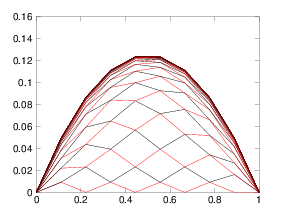
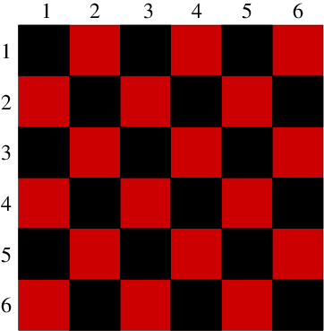
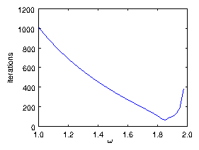

Chapter 6 Elliptic Problems and Iterative Matrix Solution
6.1 Elliptic Equations and Matrix Inversion
In elliptic equations there is no special time-like
variable and no preferred direction of propagation of the physical
influence. Generally, therefore elliptic equations, such as Poisson's
equation, arise in solving for steady state
conditions in multiple dimensions.
A diffusive problem with constant (time independent) source (s) and
boundary conditions, evolved forward in time, eventually reaches a
steady state. When it has reached that state,
∂/∂t=0. So the steady state satisfies the equation
with the time derivative set to zero.
∇. (D ∇ψ) = − s.
(6.1)
This is an elliptic equation34. Indeed, if the diffusivity,
D, is uniform, it is just Poisson's equation. The final steady state
of a diffusive equation is an elliptic problem.
The linear elliptic problem in space can naturally be framed as a matrix
equation by finite differencing in space and expressing the second
order difference operator as a matrix multiplication,
Bψ so that
Bψ= −s.
(6.2)
This is the matrix inversion problem expressed in standard form. Its
solution is (formally)
ψ= −B−1s.
(6.3)
So to solve a linear elliptic problem requires simply a matrix
inversion. Actually the hard work for the human is
expressing the difference equations, and especially the boundary
conditions, in the form of the matrix B. But once that's done
the computer simply has to invert the matrix. Small problems can
readily be solved in this way.
As we've seen for the diffusive problem, though, the matrices involved
in multidimensional problems can quickly become overwhelmingly large.
The computational cost of inverting them can become excessive. What
does one do? Well, we know how to solve a diffusive equation without
inverting matrices, don't we. We advance it forward in time using an
explicit scheme, being sure to observe the stability limits on
time-step. If we take enough time steps, we'll reach a steady
state. Then we'll have the solution to the corresponding elliptic
problem.
This is the most appropriate way to solve a gigantic matrix inversion
problem. We do not invert the matrix. Instead, we
iterate ψ until it satisfies the matrix equation
Bψ
=−s as accurately as we like, then we have our
solution.
How do we iterate? Given what we've said already, we
can think of this as the solution of a time-dependent diffusive
problem. And for simplicity we'll take the diffusivity uniform.
∂ψ
∂t
= D ∇2ψ+s.
(6.4)
An iteration takes us from ψ(n) to ψ(n+1). It is
essentially a time-step of our diffusive problem. And if we wish to
avoid having to invert the matrix, we can use exactly the explicit
FTCS scheme to advance it (c.f. eq. 5.2), in one
space dimension
ψ(n+1)j −ψ(n)j =
D∆t
∆x2
(ψ(n)j+1−2ψ(n)j+ψ(n)j−1 + s(n)j∆x2/D).
(6.5)
Observe that the term in parentheses on the right hand side of this
equation is the finite difference form of the steady state equation.
If ψ satisfies the steady-state equation, then the RHS is zero,
and there is no change in ψ: ψ(n+1)=ψ(n). If there
is no change in ψ, the steady state equation is satisfied.
Now because we are only really interested in the final steady state,
we don't worry about how accurate the time integration is. We just
want to get to the final state as fast as we can. However, we do have
to worry about stability, because if we use too large a time step and
experience instability because of it, we will probably never reach the
steady state. We know the limit of how large ∆t can be for
this scheme. The limit is ∆t ≤ ∆x2/2D. If we choose
that limit, then the iterative scheme becomes:
ψ(n+1)j −ψ(n)j =
1
2
(ψ(n)j+1−2ψ(n)j+ψ(n)j−1 +
s(n)j
D
∆x2).
(6.6)
In Nd equally-spaced dimensions, where there are 2Nd adjacent
points in the stencil, the stability limit is ∆t = ∆x2/2NdD and 2Nd replaces 2 in both the leading
fraction and the coefficient of ψ(n)j. The general
iterative form can be considered to be:
ψ(n+1)j −ψ(n)j = (
∑ q
aqψ(n)q
/
∑ q
aq) − ψ(n)j +
s(n)j
∑ q
aq
,
(6.7)
where the index q ranges over all the 2Nd adjacent nodes of
the difference stencil. The coefficient of stencil node q is
aq=D/∆x2. The aq will not all be the same if
dimensions are unequally spaced. The coefficient of ψ(n)j
is always −1, and exactly cancels the same term on the left hand
side.
This scheme is referred to as Jacobi's method for
iterative inversion of matrices35. Unfortunately it converges
slowly. Fortunately we can do better using schemes inspired by
Jacobi's method but using our knowledge more efficiently.
When we are mid way through updating the solution using Jacobi's
method, we know some of the new values ψ(n+1)q at the
adjacent nodes. For example if we were updating in order of increasing
indices a two dimension spatial configuration, then when we come to
update ψ(n)jk, we already know ψ(n+1)j−1, k and
ψ(n+1)j,k−1. Maybe we should use those new values
immediately in the difference scheme, rather than the old values at
n. Such a scheme of using the currently updated values as available,
applied to eq. (6.7) is called the
Gauss-Seidel method.
6.2 Convergence Rate
The Gauss-Seidel
method still converges nearly as slowly as the Jacobi method. The
easiest way to see this (and the best way to implement the method for
PDE solution) is not to update the values in increasing order of
index. Instead it is better to update every other value. First
update all the odd-j values and then update all the even-j
values. The advantage is that at each stage of the update all the
adjacent values in the stencil that are used have the same
degree of update. The odd values are updated using the all old even
values. Then the even values are updated using the all new odd values.
In multiple dimensions the same effect can be achieved by updating
first all the values whose indices sum to an odd value (j+k+...=
odd), and then those that sum to an even number. In two dimensions
this choice can be illustrated by reference to a checkerboard of red
and black squares representing the positions of the nodes. Fig. 6.1 illustrates the approach. The algorithm is to
update first the red, then the black squares. The Red-Black updating
order separates the update into two
half-updates.36
(a)(b)
Figure 6.1: (a) One dimensional Gauss Seidel odd-even iteration produces
successive solutions for each half-step that form a web that
progresses upwards toward the solution. (b) In two dimensions the
alternate squares to be updated are all the red (lighter shaded), then all the black.
Consider a Fourier mode37 of wave number kx=pπ/L, where p is the
integer mode number and L is the length of the domain
(one-dimensional for simplicity) at whose ends Dirichlet boundary
conditions are assumed. Its half-update through eq. (6.6) (ignoring the source term), gives rise to an
amplification factor
A=ψ(n+1)j/ψ(n)j =
1
2
(eipπ∆x/L+ e−ipπ∆x/L) = cos(pπ∆x/L)
(6.8)
The convergence process consists of the decay of the error in each mode of the
system, by which ψ is still different from
the steady solution. Each mode is repetitively multiplied by A at
each half-step. So after m full-steps (2m half-steps) the mode
has decayed by a factor A2m. After some time, the biggest error
is going to be caused by the slowest-decaying mode. That is the mode
whose amplitude factor is closest to 1. Since A=cos(pπ∆x/L), the mode with A closest to 1 is the mode with the smallest
wave number namely p=1. If the number of spatial mesh nodes,
Nj=L/∆x is large, then we can Taylor expand the cosine (for
p=1)
A ≈ 1 −
1
2
⎛ ⎝
π∆x
L
⎞ ⎠
2
= 1−
1
2
⎛ ⎝
π
Nj
⎞ ⎠
2
.
(6.9)
To reduce the amplitude of the mode by a factor 1/F takes a
number of steps m such that A2m = 1/F, or, taking the logarithm
and using the expansion ln(1+x) ≈ x, so lnA ≈ −π2/2Nj2,
m =
1
2
ln(1/F)/lnA ≈ lnF
⎛ ⎝
Nj
π
⎞ ⎠
2
.
(6.10)
This equation shows that to converge by a specified factor, requires a
number of steps proportional to Nj2. That is a lot
of
iterations. Incidentally, the Jacobi iteration obviously leads to the
same amplification factor A. The difference is that it is the factor
for a full step, rather than a half step. Therefore Gauss-Seidel
iteration converges only a factor of two faster than Jacobi iteration.
On the plus side, for multiple dimensions, things don't get
significantly worse. A square two-dimensional domain with ∆x = ∆y has the same A, so it takes the same number of iterations.
6.3 Successive Over-Relaxation
The Gauss-Seidel method is a "successive" method where values are
updated in succession, and the
updated values are immediately used. It turns out that one can greatly
improve the convergence rate by the simple expedient of
over-correcting the error at each step. This is called
"over-relaxation" and when applied to the Gauss-Seidel method is
therefore called "Successive Over-Relaxation" or SOR. By analogy
with eq. (6.7) it can be written
ψ(n+1)j −ψ(n)j = ω
⎡ ⎢
⎣
⎛ ⎝
∑ q
aqψ(r)q
/
∑ q
aq
⎞ ⎠
− ψ(n)j +
s(n)j
∑ q
aq
⎤ ⎥
⎦
,
(6.11)
where r=n for q corresponding to odd centered stencils, and
r=n+1 for q corresponding to even. The parameter ω > 1 is
the over-relaxation parameter. Strictly speaking, if ω < 1 one
should speak of under-relaxation. The particular case ω = 1 is
the original Gauss-Seidel scheme.
It turns out that SOR is stable for 0 < ω < 2. It is intuitively
reasonable to guess that SOR converges faster for ω > 1, than for
ω = 1. It is not at all straightforward to show how much faster
it converges.38 Therefore we will simply
summarize the facts without proving them.
There is an optimal value of ω somewhere between 1
and 2, where SOR converges fastest.
If AJ is the amplification factor for the corresponding
Jacobi iteration [cos(π∆x/L) for a uniform problem] then
the optimal value is
ω = ωb=2/(1+
√
1−AJ2
)
.
For this optimal ω the amplification factor for the SOR
is ASOR = ωb−1 = (AJωb/2)2.
For the uniform case and large Nj, these imply
ωb ≈
2
1+π/Nj
, and ASOR ≈ 1−
2π
Nj
.
(6.12)
These facts show that near the optimal relaxation parameter the number
of steps needed to converge by a factor F is approximately NjlnF/2π
(not Nj2lnF/π2 as with Gauss-Seidel). That is a very big
benefit. However, obtaining that benefit requires one to estimate
ωb accurately, and for more complicated problems doing that
becomes hard. Choosing ω well is probably the main challenge
for SOR. Fig. 6.2 shows an illustrative example.

Figure 6.2: Number of iterations required to converge a SOR solution of
Poisson's equation with uniform source on a mesh of length
Nj=32. It is declared converged when the maximum ψ-change
in a step is less than 10−6 ψmax. The minimum
number of iterations is found to be 63 at ω = 1.85. This
should be compared with theoretical values of
ln(106)(Nj/2π)=70 at
ω = 2/(1+π/Nj)=1.821.
There are other iterative matrix solution techniques, associated with
the name Krylov. Like the SOR solution technique, they
use just multiplication by the matrix, not inversion. That is a big
advantage for very sparse matrices arising in PDE solving. They go by
names like "Conjugate Gradient", "Newton
Krylov" and "GMRES". In some
situations they converge faster than SOR, and they don't require
careful adjustment of a relaxation parameter. However, they have their
own tuning problems associated with "preconditioning". These topics
are introduced very briefly in the final chapter.
6.4 Iteration and Nonlinear Equations
A major advantage accrues
to iterative methods of solving elliptic problems. It is that we
only have to multiply by the difference matrix. Because that
difference matrix is extremely sparse, we need never in
fact construct it in its entirety. We perform the matrix
multiplication more physically by performing the small number of
multiplications of adjacent stencil mesh values by coefficients. This
saves immense amounts of storage space (compared with constructing the
full matrix), and immense numbers of irrelevant multiplications by
zero. The cost we must pay for the benefit of not constructing and
inverting the matrix is that a substantial number of iterations is
necessary. Generally for sizable multidimensional problems that
iteration cost is far less than the savings.
Another situation where iteration becomes essential is when the
differential equations are
nonlinear. In the screening of
electric fields by plasmas or
electrolytes, for example, the source of the
Poisson equation (the charge density) is a nonlinear function of the
potential, ϕ, in this case an exponential leading to:
∇2 ϕ = −s = exp(ϕ)−1.
(6.13)
How do we solve such an elliptic equation? It cannot be solved by
matrix inversion because of the nonlinearity on the right hand side.
Even if we invert the difference matrix and construct eq. (6.3): \upphi
= − B−1s, because s
is a nonlinear function of ϕ, this expression does not constitute
a solution of the problem.
The generic answer to how to solve a nonlinear problem is
Linearize it about the current estimate of the solution.
Solve or advance the linear problem.
Repeat from 1, until converged on the nonlinear solution.
When one knows that iteration is required anyway, because the problem
is nonlinear, one has substantial incentive to use an iterative
method for the linearized part of the problem as well. Very often it
will cost no more effort to solve a nonlinear problem by iteration
than a linear problem.
6.4.1 Linearization
Suppose we have potential function ϕ(n), at step n, not yet
a solution of the steady elliptic equation. In the neighborhood of
that function, we can express the source via a Taylor
expansion (at
each point in the mesh):
s(ϕ) = s(ϕ(n))+
∂s
∂ ϕ
~
ϕ
+
1
2!
∂2 s
∂ ϕ2
~
ϕ
2
..., where
~
ϕ
=(ϕ−ϕ(n)).
(6.14)
For values of ϕ close enough to ϕ(n), i.e. small enough
~
ϕ
, we can ignore all but the first two terms of this
expansion. For our exponential example, substituting for ϕ and
rearranging the terms, we would then obtain the linearized equation
∇2
~
ϕ
− exp(ϕ(n))
~
ϕ
= exp(ϕ(n)) −1 − ∇2ϕ(n).
(6.15)
The right hand side is the residual - the amount by which the
step-n value fails to satisfy the differential equation.
More generally one obtains, from ∇2ϕ = −s, a linearized equation
∇2
~
ϕ
+
∂s
∂ ϕ
⎢ ⎢
ϕ(n)
~
ϕ
= −s(ϕ(n)) − ∇2ϕ(n).
(6.16)
This equation can be solved to find
~
ϕ
linearly. Of course
~
ϕ
is our linearized estimate of the amount by which the
real solution ϕ is different from the starting value at the nth
step: ϕ(n). If we find the solution of the linearized
equation (6.16), then, since that equation is only
approximate, the new value
ϕ(n+1) ≡ ϕ(n)+
~
ϕ
is only an
approximate solution of the original nonlinear equation. Presumably,
though, it is closer to the actual solution. So if we simply interate
the process then as n increases we approach the full nonlinear
solution. That is an iterative solution to the nonlinear problem
using linearization.
6.4.2 Combining linear and nonlinear iteration
The question then arises: what method should we use to solve the linear
problem to find
~
ϕ
? It is natural to be guided by the
knowledge that even if we solved the linear problem exactly, that
would not give us an exact solution of the nonlinear
problem. Therefore it is unnecessary to solve the linearized
equation exactly. And in many cases it is in fact not even necessary
to get close to the exact solution of the linearized equation for each
interation of the nonlinear equation. What we then can do is to say,
we'll solve the linearized equation iteratively, but we'll use
only one step in our solution. In other words, ϕ(n+1)
is arrived at by doing a single advance of the linearized equation
iterative scheme (e.g. a SOR advance). Then we recalculate s and
its derivative ∂s/∂ϕ for the new value of ϕ,
and iterate.
Actually one might sometimes be able to dispense with the linear term
in the linearization, by retaining, in the Taylor expansion for s,
only the first, constant term. That would amount to using
∇2ϕ(n+1) = expϕ(n)−1 as the equation to be solved
for each step of the nonlinear iteration. Whether that will work
depends upon the relative importance of the ∇2ϕ term in the
equation. In places where ∇2ϕ is small, the nonlinear
equation behaves like a transcendental equation for ϕ: simply
expϕ−1 ≈ 0. In that case, solving eq. (6.15),
(without the ∇2ϕ term) is equivalent to a single Newton
iteration of a root-finding problem, which is a
sensible iteration to take. Without the linear term, though,
negligibly small advance towards the nonlinear solution will occur.
It is hard to generalize about how fast the iteration is going to
converge on the solution of the nonlinear equation. It depends upon
the type of nonlinearity. But it is usually the case that if the
iterative advance is chosen reasonably, then the convergence to the
nonlinear solution takes no more iterations than approximately what it
would require to converge as accurately to a solution of the
linearized equations. In short, iterative solutions can readily
accommodate nonlinearity in the equations, and produce solutions with
comparable computational cost.
Worked Example: Optimal SOR relaxation
Consider the elliptic equation
∂2ϕ
∂x2
+
∂2ϕ
∂ y2
= s(x,y)
(6.17)
expressed on a cartesian grid x=j∆x, j=0,1,...,Nx;
y=k∆y, k=0,1,...,Ny. And suppose the boundary conditions
at x=0 and Nx∆x, and y=0 and Ny∆y are
ϕ = f(x,y). Find the optimum relaxation parameter ω for an SOR
iterative solution of the system, and the resulting convergence rate.
Suppose the final solution of the system is denoted ϕs. We can
define a new dependent variable ψ = ϕ−ϕs, which is the error
between some approximation of the solution (ϕ) and the actual
solution. Of course, while we are in the process of finding the
solution, we don't know how to derive ψ from ϕ, because we
don't yet know what ϕs is. That fact does not affect the
following arguments. Substituting for ϕ = ψ+ϕs in the
differential equation and using the fact that ϕs exactly
satisfies it and the boundary conditions, we immediately deduce that
ψ satisfies the homogeneous differential
equation
∂2ψ
∂x2
+
∂2ψ
∂ y2
= 0,
(6.18)
together with homogeneous boundary conditions: ψ = 0 on the
boundary. Of course the final solution for ψ is, as a
consequence, simply zero. But prior to arriving at that solution,
ψ is non-zero and any iteration scheme that we use to solve for
ϕ is equivalent to an iteration scheme to solve for ψ. In
particular, the convergence rate of ψ to zero is just the
convergence rate of ϕ to ϕs. All stability and convergence
analysis can be done on the simpler homogeneous ψ system eq. (6.18), and its results applied immediately to the ϕ
system (6.17).
The homogeneous Jacobi iteration
(see eq. 6.6) in two dimensions of different grid spacing is
ψ(n+1)j,k −ψ(n)j,k =
1
2
⎛ ⎝
ψ(n)j+1,k+ψ(n)j−1,k
∆x2
+
ψ(n)j,k+1+ψ(n)j,k−1
∆y2
⎞ ⎠
⎛ ⎝
1
∆x2
+
1
∆y2
⎞ ⎠
−1
−ψ(n)j,k.
(6.19)
Now we do a Von Neumann analysis of the
homogeneous system, examining
the Fourier modes of the 2-Dimensional system. They are proportional
to expi(kxx+kyy)=expiπ(pj/Nx + qk/Ny), where p and q
are integers that label the mode39.
For the p,q Fourier mode, ψ(n)j+1,k+ψ(n)j−1,k=2cos(pπ/Nx)ψ(n)j,k and ψ(n)j,k+1+ψ(n)j,k−1=2cos(qπ/Ny)ψ(n)j,k.
So, substituting, we get the two-dimensional version of eq. (6.8)
AJ ≡ ψ(n+1)j,k/ψ(n)j,k =
⎛ ⎝
cos(pπ/Nx)
∆x2
+
cos(qπ/Ny)
∆y2
⎞ ⎠
⎛ ⎝
1
∆x2
+
1
∆y2
⎞ ⎠
−1
.
(6.20)
The slowest-decaying mode is the longest wavelength mode: p=1, q=1.
For this mode, expanding cosθ ≈ 1−θ2/2, we get
AJ
≈
1 −
⎛ ⎝
π2
2 Nx2∆x2
+
π2
2 Ny2∆y2
⎞ ⎠
⎛ ⎝
1
∆ x2
+
1
∆y2
⎞ ⎠
−1
=
1−
1
2
⎡ ⎣
⎛ ⎝
π
Nx
⎞ ⎠
2
∆ y2
∆x2+∆y2
+
⎛ ⎝
π
Ny
⎞ ⎠
2
∆ x2
∆x2+∆y2
⎤ ⎦
=
1−
1
2
⎛ ⎝
π
NxNy
⎞ ⎠
2
Nx2∆y2+ Ny2∆ x2
∆x2+∆y2
.
(6.21)
For brevity in the rest of our equations, let's define a number
to represent the second term
M ≡ NxNy
/
⎛ √
Nx2∆y2+ Ny2∆x2
∆x2+∆y2
(6.22)
so that
AJ=1−1/2
⎛ ⎝
π
M
⎞ ⎠
2
and M serves as a
measure of the grid size, like N in the one-dimensional problem.40
The optimal SOR relaxation factor ωb is then expressed in
terms of AJ as
ωb
=
2
1+
√
(1+AJ)(1−AJ)
≈
2
1+
π
M
.
(6.23)
The resulting amplification factor for SOR iteration using this
ωb is
ASOR = ωb−1 ≈ 1−
2π
M
,
(6.24)
and the number of iterations required to reduce ψ by a factor 1/F
is (c.f. 6.10)
m = −lnF / lnASOR ≈ M
lnF
2π
.
(6.25)
Enrichment: Outline of SOR Convergence Analysis
Assume the matrix B in eq (6.2) to
be solved is arbitrary except that its diagonal entries are minus
unity. That can be ensured without loss of generality by scaling the
equations. It can then be separated into three parts: the diagonal,
which is just minus the unit matrix I, plus U, those
entries that multiply the old ψ-values (even nodes), plus
L, those entries that multiply the new values (odd
nodes). B=−I+U+L. Then the SOR scheme
(ignoring source) can be written
ψ(n+1)−ψ(n) = ω[(−I + U)ψ(n) + Lψ(n+1)].
Collecting n terms together
(I−ωL)ψ(n+1) = [(1−ω)I + ωU]ψ(n) ,
which can be written
ψ(n+1)=(I−ωL)−1 [(1−ω)I + ωU]ψ(n) = Hψ(n).
The eigenvalues of the advancing matrix H are the
"amplification factors" for the true modes of the system. They are
the solutions, λ, of
det
(H−λI)=0
. But
H−λI = (I−ωL)−1{ (1−ω)I + ωU−λ(I−ωL) }
So
det
{λωL +(1−λ−ω)I + ωU}=0.
Now the determinant of any matrix
α−1L−D+αU, where L and
U are lower and upper triangular parts and D is the
diagonal, is independent of α. One can see this by noticing that
any term in the expansion of the determinant has equal numbers of
elements from U as it has from L; so the α
factors cancel out. As implied by our
notation, we can arrange the nodes in an appropriate order such
that all the even coefficients are in the upper triangle and the odd
coefficients in the lower triangle part of the matrix. This would be
achieved by the simple expedient of putting all the even positions
first. Actually we don't need to do the rearrangement. We just need
to know it could be done. In that case, we can
balance the upper and lower parts of the determinantal equation,
multiplying the L term by λ−1/2 and the U
term by λ1/2
to make it:
det
{λ1/2ωL +(1−λ−ω)I + λ1/2ωU}=0,
i.e.
det
{−(λ+ω−1)ω−1λ−1/2I +L + U}=0.
Now notice that the eigenvalues μ for the Jacobi iteration
matrix, L+U, satisfy
det
(−μI+L+U)=0
, which is exactly the same
equation with the identification
(λ+ω−1)ω−1λ−1/2 = μ. There's a direct
mapping between eigenvalues of the Jacobi iteration and of the SOR iteration.
The relationship can be considered a quadratic equation for λ,
given μ and ω
λ2+(2ω−2 −ω2μ2)λ+(ω−1)2=0.
The optimum ω gives the smallest magnitude of the larger
λ solution. It occurs when the λ roots coincide,
i.e. when (ω−1−ω2μ2/2)2=(ω−1)2 whose solution
is
ω = ωb =
2
1+
√
1−μ2
.
The corresponding eigenvalue is λ = ωb−1. For
ω > ωb, the roots for λ are complex with magnitude
ω−1. Therefore SOR is stable only for ω < 2, and the
convergence rate degrades linearly to zero between ωb and 2.
Exercise 6. Iterative Solution of Matrix Problems.
1. Start with your code that solved the diffusion equation
explicitly. Adjust it to always take timesteps at the
stability limit ∆t = ∆x2/2D, so that:
ψ(n+1)j −ψ(n)j = (
1
2
ψ(n)j+1−ψ(n)j+
1
2
ψ(n)j−1 +
s(n)j
2 D
∆x2).
Now it is a Jacobi iterator for solving the steady-state elliptic matrix
equation. Implement a convergence test that finds the maximum
absolute change in ψ and divides it by the maximum absolute
ψ, giving the normalized ψ-change. Consider the iteration to
be converged when the normalized ψ-change is less than (say)
10−5. Use it to solve
d2ψ
dx2
= 1
on the domain x=[−1,1]
with boundary conditions ψ = 0, with a total of Nx
equally-spaced nodes. Find how many iterations it takes to converge,
starting from an initial state ψ = 0, when
(a) Nx=10
(b) Nx=30
(c) Nx=100
Compare the number of iterations you require with the analytic
estimate in the notes. How good is the estimate?
Now we want to check how accurate the solution really is.
(d) Solve the equation analytically, and find the value of ψ at
x=0, ψ(0).
(e) For the three Nx values, find the relative error41 in ψ(0).
(f) Is the actual relative error the same as the convergence test
value 10−5? Why?
2. Optional and not for
credit. Turn your iterator into a SOR solver by splitting the
iteration matrices up into red and black (odd and even) advancing
parts. Each part-iterator then uses the latest values of ψ, that
has just been updated by the other part-iterator. Also provide
yourself an over-relaxation parameter ω. Explore how fast the
iterations converge as a function of Nx and ω.
Note. Although in Octave/Matlab it is convenient to implement the
matrix multiplications of the advance using a literal multiplication
by a big sparse matrix, one does not do that in practice. There are
far more efficient ways of doing the multiplication, that avoid all
the irrelevant multiplications by zero.